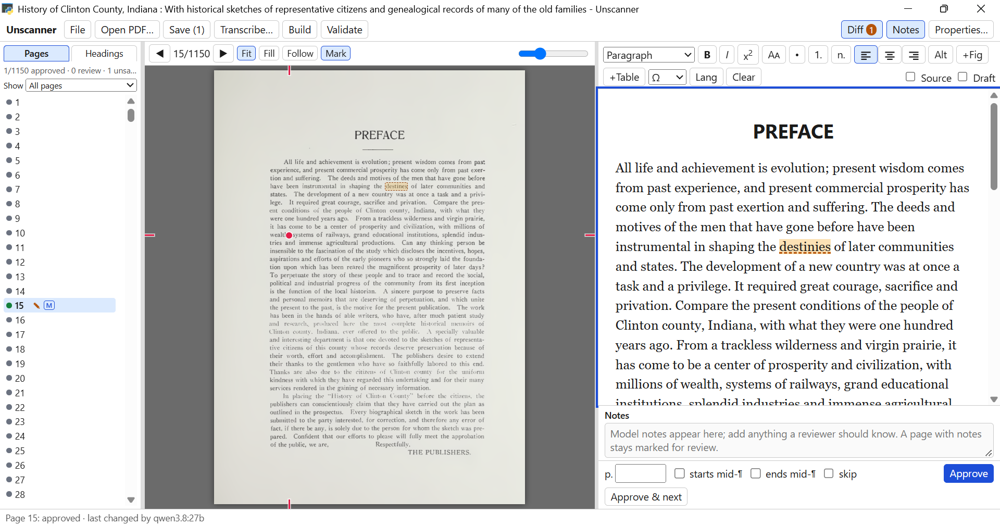
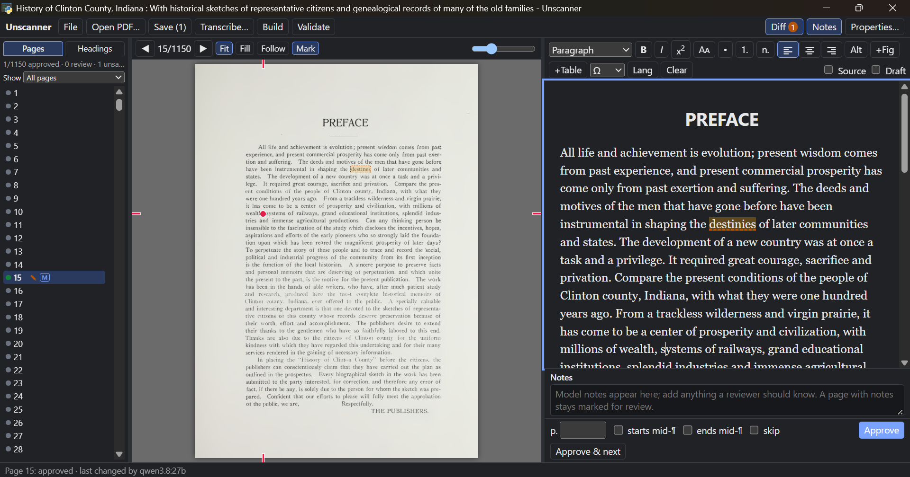

Free and open source · for libraries and disability services
Accessible, citable text out. Scanned pages in.
Unscanner turns scanned course readings into HTML and EPUB that meet WCAG 2.1 AA. An AI model reads each page, a person checks it against the scan, and the printed page numbers stay in the text, so a student using a screen reader can still find and cite page 42.
Version 0.2.0 · MIT licence · Windows installer or portable zip, or Python on any system
Page 15 of a 1,150-page county history, open for review.


- Every page, colour-coded. Green is approved by a person; the M says a model wrote it last.
- The scan itself, with Fit, Fill and zoom, so nothing is checked from memory.
- The two sides follow each other. The red dot marks the word your cursor is on in the text, and a click on the scan finds a word in the text.
- An editor that only writes accessible HTML: headings, lists, small caps, language, figures, tables.
- Diff checks the text against the scan. Here it found one word to look at, “destinies”, underlined in the text and boxed on the scan.
- Approve & next, or F2. Most of the work is this one key.
A scan is a photograph of a page
Course packs, interlibrary loans and digitised book chapters arrive as scans. They look like text, but to a screen reader they are pictures. Unscanner turns them into real text that anyone can read, and leaves your original PDF exactly as it was.
What changes for the reader
- Silence, or a jumble of OCR errorsRead aloud correctly, foreign phrases included
- Zooming makes the page blurryText reflows at any size, on any screen
- Nothing to searchEvery word searchable and copyable
- Scroll and hopeHeadings to jump by, a table of contents
- Figures are part of the photoFigures with written descriptions (alt text)
- Page numbers in the picturePrinted page numbers to navigate and cite by
From scan to finished files
You can stop at any step and pick it up later. Your work is saved as you go.
Open the PDF
Choose the scan. Title, author and language come from the file where they can, and you can check them against the title page.
Transcribe
An AI model writes out each page, several at a time, in the background. Start checking finished pages while the rest are still being read.
Review
Compare text and scan, fix what is wrong, and approve. Pages the model was unsure of come first.
Build
All pages become one web page and one e-book, with paragraphs joined back up across page breaks.
Validate
Accessibility checks, each problem linked to its page. Fix, build again, done.
Built for the part that takes people’s time
A model can transcribe a book overnight. Someone still has to check it before it goes to a student with an accommodation. Everything in Unscanner is there to make that check fast and hard to get wrong.
Scan and text side by side
The page as printed in the middle, its text on the right. Drag the dividers to taste; the widths are remembered.
Never lose your place
Follow scrolls the scan to the line you are typing on. Mark puts a small dot beside the word. Click any word on the scan and the cursor jumps to it in the text.
Diff against the scan
Words on the scan but missing from the text get a red box; words that differ get a dashed amber one, and the same words are underlined in the editor.
Know where every page stands
Show only the pages that need work, or only those with figures or tables. Ctrl+click several to approve or skip them together.
Figures, cropped from the scan
The model finds the pictures; you adjust the crop box on the scan, turn a picture, set it to wrap, and write alt text, or let AI autofill draft one for you to check.
Tables the model ran together
Select the jumbled text, click +Table, and drag a box over the table on the scan. Just that part of the page is read again and comes back as a real table with header cells.
A headings pane, like Word’s
The Headings tab shows the document’s outline as it takes shape. Fold branches away, and click a heading to go to its page.
Nothing lost, nothing overwritten
Unsaved edits survive moving between pages and even closing the app. If someone else changes a page you are editing, you choose whose version to keep.
Keyboard first
F2 approves and moves on, Ctrl+Alt+1–6 set heading levels, Alt+←/→ turn pages. A plain-language Help guide is in the File menu.
Page 81 is still page 81
A reading assigned as “pages 74 to 96” has to work that way for every student. Unscanner keeps the printed page number of every page as a marker in the text, and puts it exactly where the page turns, even in the middle of a sentence.
- Screen readers announce it and let the reader jump to any page, from the EPUB’s page list or the HTML’s.
- Paragraphs are joined back up across the page turn, and a word hyphenated over the edge is mended the way the rest of the book spells it.
- Numbered lists carry on across pages as one list, not two lists both starting at 1.
- Roman numerals and unnumbered pages are kept as printed; running heads and library stamps are dropped.
<!-- the end of page 80 and the start of 81, one paragraph -->
<p>From a trackless wilderness and virgin
prairie it has come to be a center of
prosperity, with systems of rail<span
role="doc-pagebreak" id="pg-81"
aria-label="Page 81">81</span>ways,
grand educational institutions and
splendid industries.</p>The marker sits inside the joined paragraph, at the exact point the printed page turns, and #pg-81 links straight to it.
Two files, ready to hand over
The text is kept to what helps a reader: real headings, lists, tables, emphasis, figures and footnotes. Fonts, sizes and colours are left to the reader’s own device, which is what lets them enlarge the text or have it read aloud. There is no way to type an inaccessible layout into the editor.
.html
One web page
- A single self-contained file, pictures included: it opens with a double-click and uploads to Canvas, Moodle or Blackboard as it is
- A folding outline of headings at the top
- Linked footnotes and a list of every page
.epub
One e-book
- EPUB 3 with a table of contents and a page list, for Apple Books, Thorium and screen-reader apps
- EPUB Accessibility 1.1 metadata, including
printPageNumbers - Checked with the W3C’s epubcheck: zero errors
Settings
Your house style
- Book-style indented paragraphs, justified text, page numbers shown or hidden, for each format
- Greyscale or JPEG pictures for smaller files
- Your original PDF is never changed
Checked before it leaves your desk
- Every page’s word count compared with the scan’s, to catch skipped or invented text
- Anything the model was unsure of flagged for a person
- Exactly one top-level heading, and no skipped heading levels
- A description on every image
- Header cells on every table
- Document language and title set
- Unique ids and no broken links
- A page marker for every page
- epubcheck on the finished e-book
Claude, or a model you run yourself
Use Claude through Anthropic’s API, or any vision model your institution hosts behind an OpenAI-compatible address: Ollama, vLLM, LM Studio. Pages never go anywhere you have not chosen.
- Tell the model who you are. The standing instructions say who is doing the work and on what legal basis, so a faithful transcription is not mistaken for a copyright problem. Edit them in Settings for your institution.
- A second opinion on refusals. If a model declines a page, Unscanner can try it once on another model and flag it for review.
- Your house rules. How to treat headings, footnotes, tables and figures is plain text you can change, without touching code.
- Keys stay private. API keys go to Windows Credential Manager or the macOS Keychain, and are never shown again.
Rough cost of a reading, at list prices
| Model | Per page | 50-page chapter |
|---|---|---|
| Claude Opus | about $0.04 | about $2 |
| Claude Sonnet | about $0.02 | about $1 |
| Claude Haiku | about $0.01 | about $0.50 |
| Your own GPU | electricity | electricity |
A sensible routine: run everything through a local model or Sonnet, then re-run only the flagged pages on Opus.
Work alongside Claude
Unscanner is also an MCP server. Keep the app open, talk to Claude Desktop or Claude Code in another window, and Claude sees the page you are on.
- No page numbers needed. “This table is wrong” is enough: Claude looks at the same scan and text you do.
- Its edits appear in your window within seconds, marked with a C, waiting for you to approve.
- It can point you somewhere, bringing a page up on your screen, or re-run the model on a range with extra instructions.
- Or hand it the whole job. “Remediate this PDF into accessible HTML and EPUB” runs open, transcribe, build and validate for you.
- YouThe two columns on this page came out interleaved.
- ClaudeI see it on page 212: the model read across both columns. I’ve re-read the page left column first and saved it for your review.
- Page 212 updated by Claude · Approve to confirm
- YouDo the same for any other two-column pages.
Yours to keep, move and adapt
Everything on your computer
Projects live in your Documents folder. Nothing needs a server or an account, apart from the model you choose.
Projects that follow the PDF
Unscanner recognises a PDF by its content, so a renamed or moved scan opens straight back into your earlier work.
Hand it to a colleague
Export a project as one small file to keep beside the PDF, back up, or carry on at another desk.
Made to be changed
Plain Python and one HTML page, with no build step, and a guide written so a library can adapt it with Claude’s help. MIT licensed.
Get Unscanner
No administrator rights needed for any of these.
Recommended on Windows
Installer
Installs for you alone and adds Unscanner to the Start menu. It opens in its own window. The installer is not signed yet, so Windows asks once: choose “More info”, then “Run anyway”.
Unscanner-Setup .exeWindows, nothing installed
Portable zip
Unzip it anywhere, even a USB stick, and double-click start-unscanner.bat. Python and everything else are inside.
Windows, macOS, Linux
From source
With Python 3.11 or later:
git clone https://github.com/brsloan/unscanner
cd unscanner
pip install -e .[window]
python -m unscanner.cli ui